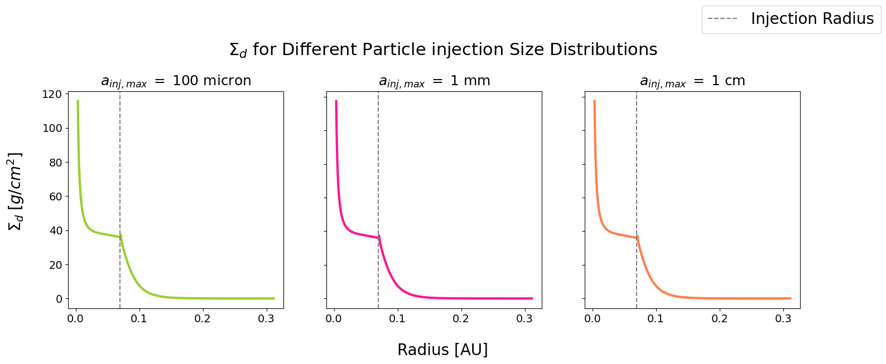
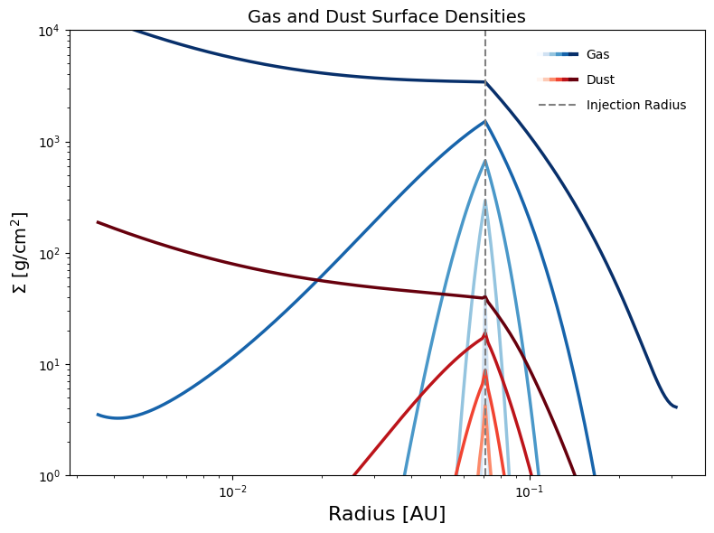
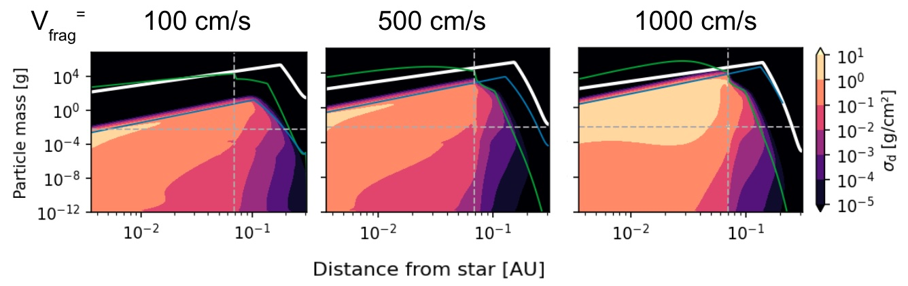
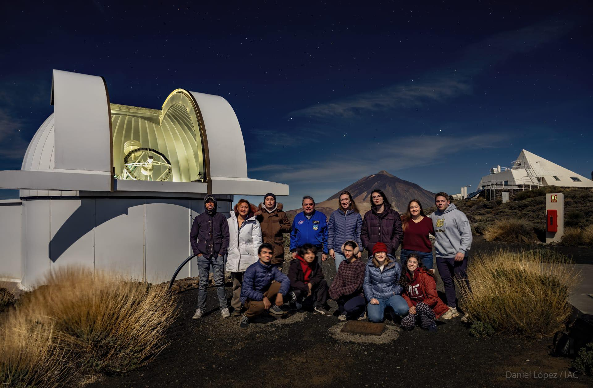
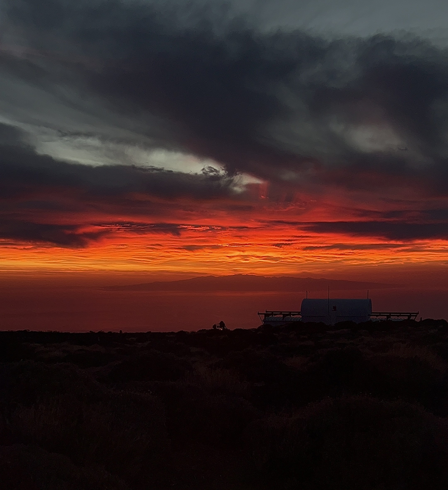
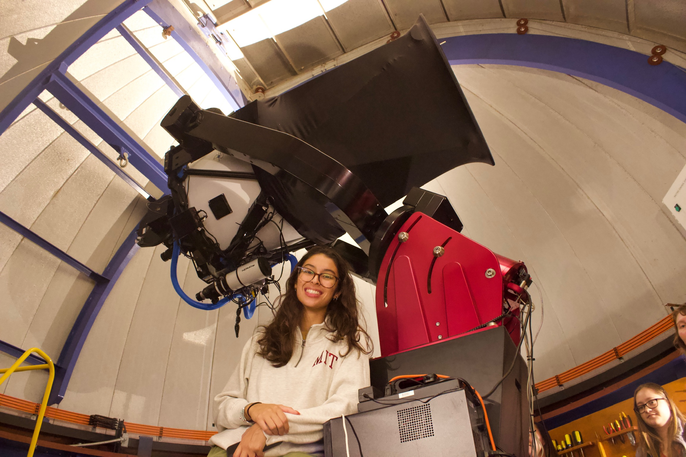
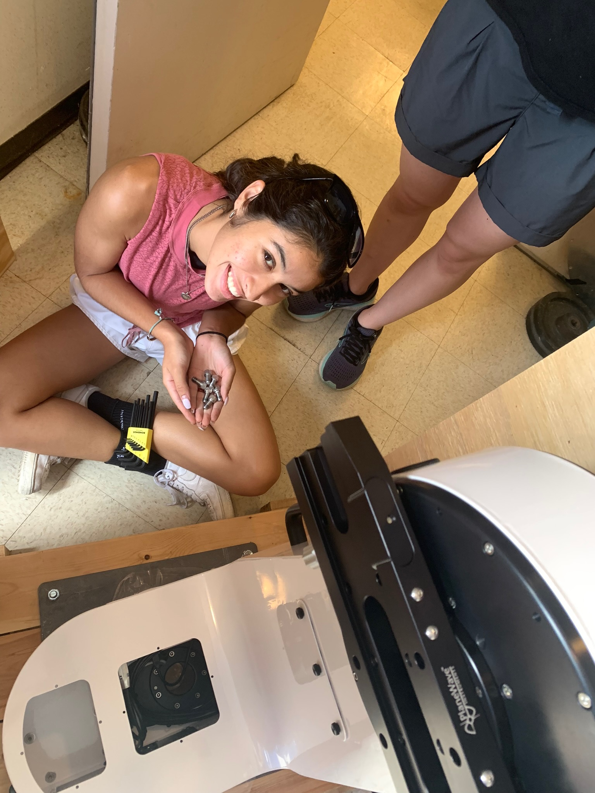
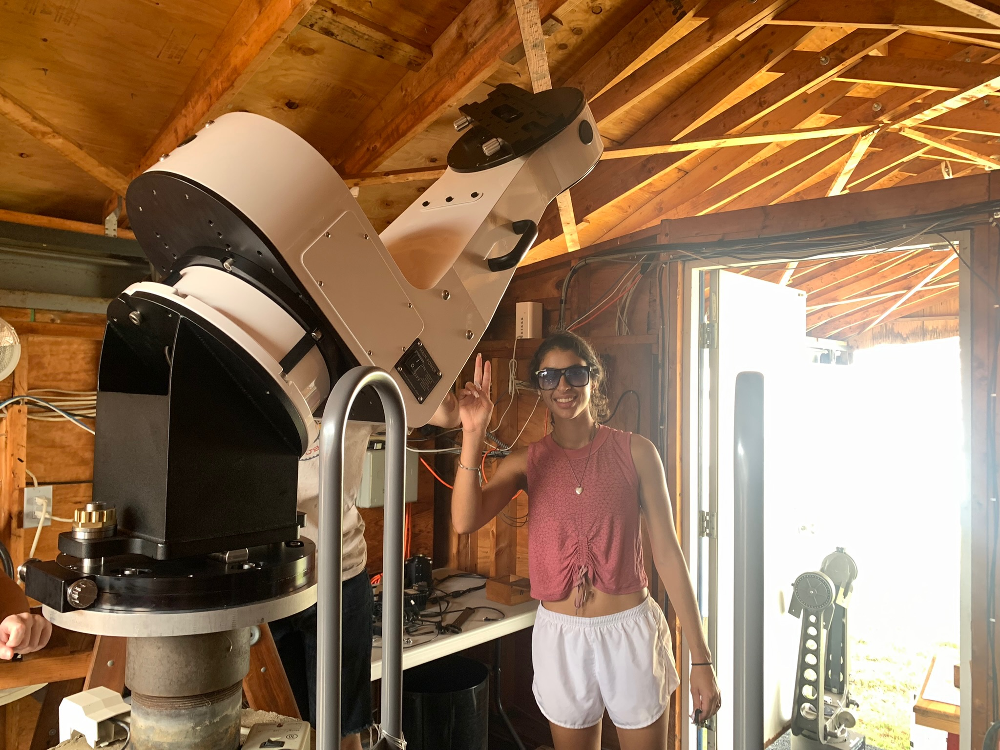

My Work
My research journey spans modelling and observation with projects across Cambridge and overseas. What connects it all is a curiosity about how planetary systems come to look the way they do.
Global Valley Widths on Mars
Advisor: Prof. Gaia Stucky de Quay (MIT)
The red planet was once a wet world. Its valley networks are some of the strongest evidence we have for sustained liquid water on an early Mars. While there has been extensive research examining these features, their widths have yet to be mapped at a global scale.
Valley width is a meaningful morphological signal. It reflects the intensity of past surface flow and preserves the fingerprints of modifying processes that shaped Mars' early surface. Combined with existing measurements of valley depth and length, a global width dataset would offer an unprecedented window into the spatial patterns of ancient water activity across the planet.
This project builds a computational pipeline to intake mapped Martian valley networks and their associated depth profiles from Goudge et al. (2021), calculating valley widths via perpendicular transects across topographic rasters at regular intervals along valley centerlines.
The resulting width measurements are then plotted against their associated depths to derive the width-to-depth ratio, the α parameter described in Finnegan et al. (2005), which serves as a proxy for sediment composition across different regions of Mars. By comparing predicted composition with the spatial behavior of width and depth along each valley, this work aims to distinguish between instances of catastrophic flooding and slow, calm alluvial flow.
Previous Projects
Modelling Exomoon Formation
Advisors: Prof. Richard Teague (MIT) & Dr. James Owen (ICL)
Moons around planets beyond our solar system have never been directly observed, yet understanding how they form opens a window into the broader story of planetary system evolution.
Using DustPy (Stammler & Birnstiel 2022), I simulated the evolution of a circumplanetary disk around a Jupiter-like planet, varying dust particle sizes and fragmentation velocities to track how grains grow, drift, and couple with the surrounding gas. Regardless of initial injected grain size, the disk consistently evolves toward the same maximum grain size of 0.5 cm, with larger fragmentation velocities enabling faster growth and earlier steady-state evolution. These simulations establish a baseline framework for identifying the conditions under which streaming instability, and ultimately moon formation, could occur.
This project began during a summer at Imperial College London (ICL) through MIT's International Science and Technology Initiatives (MISTI), and grew into my undergraduate thesis.
Selected Figures



Observing the Transits of Three Exoplanet Candidates
Advisor: Dr. Michael J. Person (MIT)
The transits of three exoplanet candidates were observed from Teide Observatory at the Instituto de Astrofísica de Canarias (IAC) in Tenerife, Canary Islands, using photometric data to characterize their lightcurves and constrain their planetary parameters.
Using the IAC80 and Artemis (SPECULOOS) telescopes at Teide Observatory, my collaborators and I collected photometric observations of three TESS Objects of Interest (TOIs), IDs: 2866.02, 6373.01, 4141.01, sourced from the Exoplanet Follow-up Observing Program (EXOFOP).
Aperture photometry was performed using AstroImageJ to extract lightcurves and fit transit models, deriving planetary and orbital parameters for each candidate. Modeled transit depths and planet radii were compared against EXOFOP profiles, showing close agreement across all three targets. Findings were reported at the IAC in January 2024 and uploaded to each TOI's EXOFOP page.
While the analysis confirms these candidates as credible transit signals consistent with planetary companions, further radial velocity measurements are needed to fully confirm their planetary nature.
Selected Figures


Field Photos

The 2024 12.411 cohort.

One of the many breath taking sunrises from our time on Tenerife
Martian Hillslope Analysis Model
Advisor: Prof. Gaia Stucky de Quay (MIT)
Developing a hillslope model to distinguish water-driven from ice-driven erosion on the Martian surface, and building the computational workflows to run it at scale.
As an undergrad research assistant I helped develop a hillslope model to analyze fluvial erosion on Martian surfaces, identifying features formed by flowing water versus ice melt to advance our understanding of ancient Martian hydrology.
Alongside the modeling work, I engineered workflows for DEM analysis, flow path calculations, and erosion simulations — improving data processing efficiency and enabling scalable model runs across large datasets.
Koronis Family Asteroids' Light Curves
Advisor: Dr. Michael J. Person (MIT) & Dr. Stephen Slivan (MIT)
Collecting and refining optical light curves for Koronis family asteroids at MIT's Wallace Astrophysical Observatory (WAO) in Westford, MA.
Using WAO's Elliot (24") telescope, I collected and processed photometric data of Koronis family asteroids as part of an ongoing observational program. Magnitudes were calibrated and light curves refined using SkyX and AstroImageJ, with updated curves incorporating new observational findings into the existing dataset.
This work contributed to four publications in the Minor Planet Bulletin, characterizing the rotation periods and lightcurve properties of Koronis family members (452) Hamiltonia, (5139) Rumoi, (1497) Tampere, and (1389) Onnie.
Field Photos

Elliot 24 in. and I (My favorite of the WAO telescopes!)


One of the occasional day trips to the observatory to help out with equipment maintenance. This time we installed WAO's 'Pier 1' telescope.
Publications
Lightcurves and Derived Results for Koronis Family Member (452) Hamiltonia
Slivan, S. M., Barrera, K., Colclasure, A. M., Cusson, E. M., Larsen, S. S., McLellan-Cassivi, C. J., Moulder, S. A., Nair, P. R., Namphy, P. D., Neto, O. S., Noto, M. I., R., Maya S., Rhodes, S. J., & Youssef, S. A.
Minor Planet Bulletin, 51, 176–179
View on ADS →Lightcurves and Derived Results for Koronis Family Member (5139) Rumoi Including a Discussion of Measurements for Epochs Analysis
Slivan, S. M., Barrera, K., Colclasure, A. M., Cusson, E. M., Larsen, S. S., McLellan-Cassivi, C. J., Moulder, S. A., Nair, P. R., Namphy, P. D., Neto, O. S., Noto, M. I., Redden, M. S., Rhodes, S. J., & Youssef, S. A.
Minor Planet Bulletin, 51, 6–10
View on ADS →Rotation Period of Koronis Family Member (1497) Tampere
Slivan, S. M., Brothers, T. C., Colclasure, A. M., Larsen, S. S., McLellan-Cassivi, C. J., Neto, O. S., Noto, M. I., Redden, M. S., Wilkin, F. P., & Das, N.
Minor Planet Bulletin, 50, 125–126
View on ADS →Synodic And Sidereal Rotation Periods Of Koronis Family Member (1389) Onnie
Slivan, S. M., Colclasure, A. M., Larsen, S. S., McLellan-Cassivi, C. J., Neto, O. S., Noto, M. I., Redden, M. S., & Wilkin, F. P.
Minor Planet Bulletin, 50, 8–10
View on ADS →